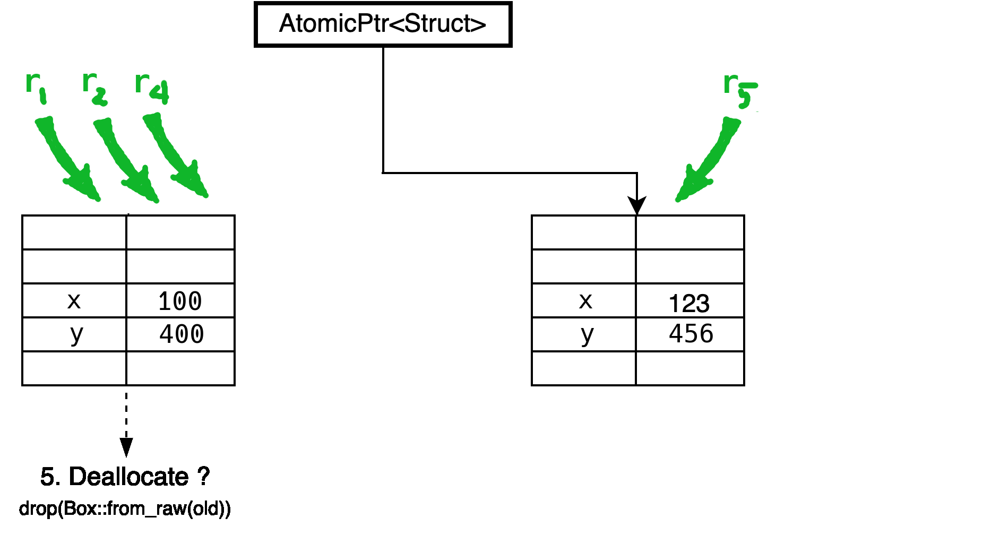

Rust Atomics and Locks 10
Tim Heaney
Chapter 10. Ideas and Inspiration
Semaphore
effectively just a counter with two operations
- signal (also called up or V)
- wait (also called down or P)
Edsger W. Dijkstra
- EWD35 (1962 or 3)
- Seinpalen (semaphores)
- V => Vrijgave (release)
- P => Passering (pass)
Semaphore can be implemented as
- a
Mutex<u32>for the counter - a
Condvarfor wait operations to wait for
More efficient with futex operations
- Futex in chapter 8
Binary semaphore
- maximum value of one
- build other things with it

Binary semaphore as mutex
- initialize counter to one
- wait operation for locking
- signal operation for unlocking
Binary semaphore for signaling
- initialize counter to zero
- wait operation for
park - signal operation for
unpark
:)
Note how a mutex can be implemented using a semaphore, while a semaphore can be implemented using a mutex (and a condition variable). It’s advisable to avoid using a mutex-based semaphore to implement a semaphore-based mutex, and the other way around.
Further reading
- semaphore (wp)
- Thread and Semaphore Examples (course notes, 2008)
RCU
RCU => read, copy, update
read, copy, modify, update, deallocate (RCMUD?)



De-allocating the old data
- some readers still have old data
- cannot delete until they're done
Possible solutions
- ignoring (leak memory)
- reference counting
- garbage collection
- hazard pointers
- quiescent state tracking
RCU => Linux kernel 2.5 (2002)
RCU
- read, copy, update
- read-copy update
Fedor G. Pikus
- Read, Copy, Update, then what?
- CppCon 2017
Other names for similar techniques
- passive serialization
- MP defer
- generations
PASSIVE SERIALIZATION IN A MULTITASKING ENVIRONMENT
Rust RCU crates
Further reading
- Read-copy-update (wp)
- What is RCU, Fundamentally? (2007)
Lock-Free Linked List
extension of RCU
- add an atomic pointer to the struct
- point to the next one
- viola, a linked list!
insert
- allocate new element
- point its pointer at the first element in the list
- atomically update the initial pointer to point to your newly allocated element

delete
- atomically update the pointer before it to point to the element after it
multiple writers
- care must be taken to handle concurrent insertion or removal operations on neighboring elements
- Otherwise, you might accidentally also remove a concurrently newly inserted element, or undo the removal of a concurrently removed element
To keep things simple
- use a regular mutex to avoid concurrent mutations
- reading is still a lock-free operation
- you don’t have to worry about handling concurrent mutation
RCU
- After detaching an element from the linked list, you’ll run into the same issue as before: waiting until you can deallocate it (or otherwise claim ownership)
- The same solutions we discussed for the basic RCU pattern can work in this case as well
In general
- you can build a wide variety of elaborate lock-free data structures based on compare-and-exchange operations on atomic pointers
- you’ll always need a good strategy for deallocating or otherwise reclaiming ownership of the allocations
Further reading
Queue-based Locks
Queue-based lock
- implement a mutex (or other locking primitive), by manually keeping track of the queue of waiting threads
- Such a mutex could be implemented as a single AtomicPtr that can point to a (list of) waiting threads
Queue-based lock
- Each element in this list needs to contain something that can be used to wake up the corresponding thread, such as a
std::thread::Threadobject. - Some unused bits of the atomic pointer can be used to store the state of the mutex itself, and whatever is necessary for managing the state of the queue
There are many variations possible
- The queue could be protected by its own lock bit
- Or it could be implemented as a (partially) lock-free structure
variations
- The elements don’t have to be allocated on the heap
- could be local variables of the threads that are waiting
variations
- The queue could be a doubly-linked list
- with pointers to the previous element as well as the next
variations
- The first element could also include a pointer to the last element
- allows efficiently appending an element at the end
only block and wake up
- This pattern allows for implementing efficient locking primitives using only something that can be used to block and wake up a single thread
- such as thread parking
Windows SRW locks
- implemented with queue-based locks
- Slim reader-writer locks in chapter 8
Further reading:
usync Rust library
MutexRwLockCondvarBarrierOnceReentrantMutex(supports recursive locking)
Parking-lot Based Locks
Parking-lot Based Lock
- Very small mutex
- built upon the queue-based locks idea
- move the queue into a global data structure
- leave only one or two bits inside the mutex itself
Parking-lot Based Lock
- the mutex only needs to be a single byte
- could even put it in some unused bits of a pointer, allowing for very fine-grained locking at almost no extra cost
Parking-lot Based Lock
- The global data structure could be a HashMap
- map memory addresses to a queue of threads waiting on the mutex at that address
Parking-lot
- This global data structure is often called a parking lot, since it’s a collection of parked threads.
Generalization
- The pattern can be generalized by not only tracking queues for mutexes, but also for condition variables and other primitives
- By tracking a queue for any atomic variable, this effectively provides a way to implement futex-like functionality on platforms that don’t natively support that
WebKit
- This pattern is most well known from its 2015 implementation in WebKit, where it was used for locking JavaScript objects.
- Its implementation inspired other implementations, such as the popular
parking_lotRust crate.
Further reading
- Locking in WebKit (2016)
- The parking lot crate
MutexRwLockCondvarOnce
Sequence Lock
Sequence Lock
- another solution to the problem of atomically updating (larger) data without using traditional (blocking) locks
- uses an atomic counter that is odd while the data is being updated, and even when the data is ready to be read
Sequence Lock
- The writing thread will have to increment the counter from even to odd before mutating the data
- after which it has to increment the counter again to leave it at a (different) even value
Sequence Lock
- Any reading thread can, at any point and without blocking, read the data by reading the counter both before and after
- If the two values from the counter are equal and even, there was no concurrent mutation, meaning you read a valid copy of the data
- Otherwise, you might have read data that was concurrently being modified, in which case you should just try again
Sequence Lock
- make data available to other threads, without the possibility of the reading threads blocking the writing thread
- often used in operating systems kernels and many embedded systems
Sequence Lock
- Since the readers need only read access to the memory and no pointers are involved, this can be a great data structure to safely use in shared memory, between processes, without needing to trust the readers
- For example, the Linux kernel uses this pattern to very efficiently provide timestamps to processes by providing them with read-only access to (shared) memory
Memory model
- An interesting question is how this fits into the memory model
- Concurrent non-atomic reads and writes to the same data result in undefined behavior, even if the read data is ignored
- This means that, technically speaking, both reading and writing the data should be done using only atomic operations, even though the entire read or write does not have to be a single atomic operation.
Further reading
- Seqlock in Linux (wp)
- Rust RFC 3301, AtomicPerByte (2022)
- The seqlock crate
The seqlock crate
- This library provides the
SeqLocktype, which is a form of reader-writer lock that is heavily optimized for readers.
The seqlock crate
- In certain situations,
SeqLockcan be two orders of magnitude faster than the standard libraryRwLocktype. Another advantage is that readers cannot starve writers: a writer will never block even if there are readers currently accessing theSeqLock.
The seqlock crate
- The only downside of
SeqLockis that it only works on types that areCopy. This means that it is unsuitable for types that contains pointers to owned data.
The seqlock crate
- You should instead use a
RwLockif you need a reader-writer lock for types that are notCopy.
The seqlock crate
use seqlock::SeqLock;
let lock = SeqLock::new(5);
{
// Writing to the data involves a lock
let mut w = lock.lock_write();
*w += 1;
assert_eq!(*w, 6);
}
{
// Reading the data is a very fast operation
let r = lock.read();
assert_eq!(r, 6);
}
Teaching Materials
Rust concurrency
- books
- blog posts
- articles
- video courses
- conference talks
- other materials
Thanks!

- @oylenshpeegul@mastodon.social
- oylenshpeegul@proton.me